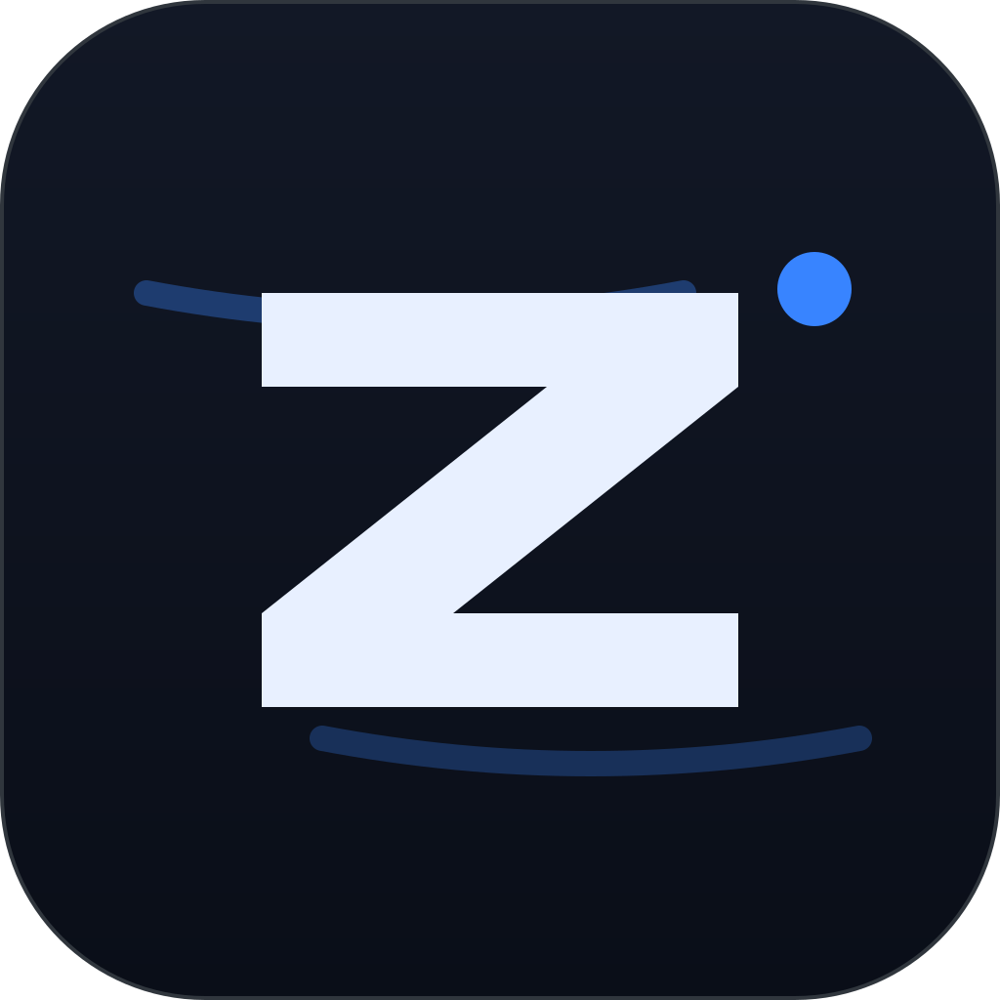
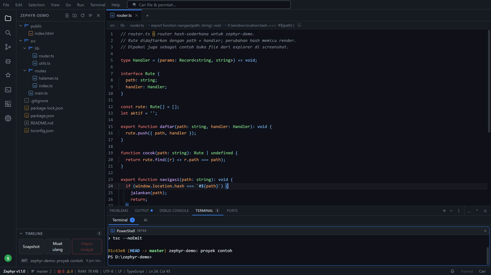
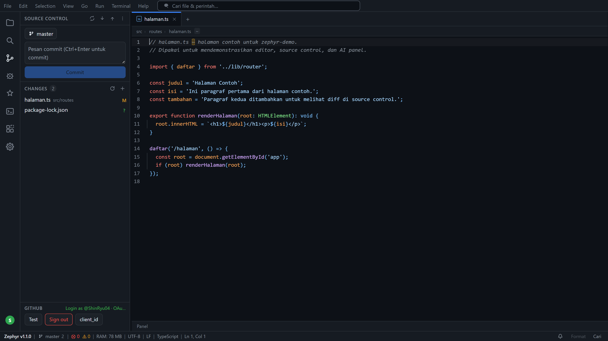

Editor dari nol
CodeMirror 6, multi-tab, deteksi encoding (UTF-8/BOM/Windows-1252/UTF-16), file >4 MB otomatis mode ringan.

ZEPHYREditor desktop Windows dari nol — ala VS Code, tapi installer 5,6 MB dan RAM idle di bawah 400 MB. Bukan Electron, bukan fork.
CodeMirror 6, multi-tab, deteksi encoding (UTF-8/BOM/Windows-1252/UTF-16), file >4 MB otomatis mode ringan.
Sampai 6 pane per tab (PowerShell, cmd, bash, WSL, Private Terminal, pane AI agent CLI, browser pane).
Chat streaming 3 adapter (OpenAI, Anthropic, Gemini), katalog model berlogo; API key disimpan di Rust, frontend hanya lihat hasKey.
HTTP JSON-RPC dengan Bearer token; agent CLI (Claude Code, Codex, Gemini CLI, opencode) bisa baca & kendalikan jendela; editor_write hanya menyentuh buffer, bukan disk.
Status, diff, stage, commit, branch, push/pull/sync; push saat remote lebih baru menawarkan pull dulu.
LSP per bahasa (completion, hover, go-to-def, diagnostics, rename), debugger DAP (js-debug) dengan breakpoint, step, watch.


Butuh Windows 10/11 dan WebView2 Runtime — WebView2 sudah ada di Windows 11, jadi biasanya langsung jalan.
Dari halaman Releases GitHub.
SmartScreen mungkin memperingatkan karena installer belum ditandatangani; klik More info → Run anyway.
Zephyr terbuka. Mulai dengan Open Folder untuk membuka proyek.
Buka panel Extensions → Marketplace, cari & install .vsix dari Open VSX. Ekstensi v1 membaca manifest (bahasa, tema, snippet, command) — kode JS ekstensi tidak dijalankan demi keamanan.
%APPDATA%\zephyr\ — hapus folder itu untuk reset penuh.